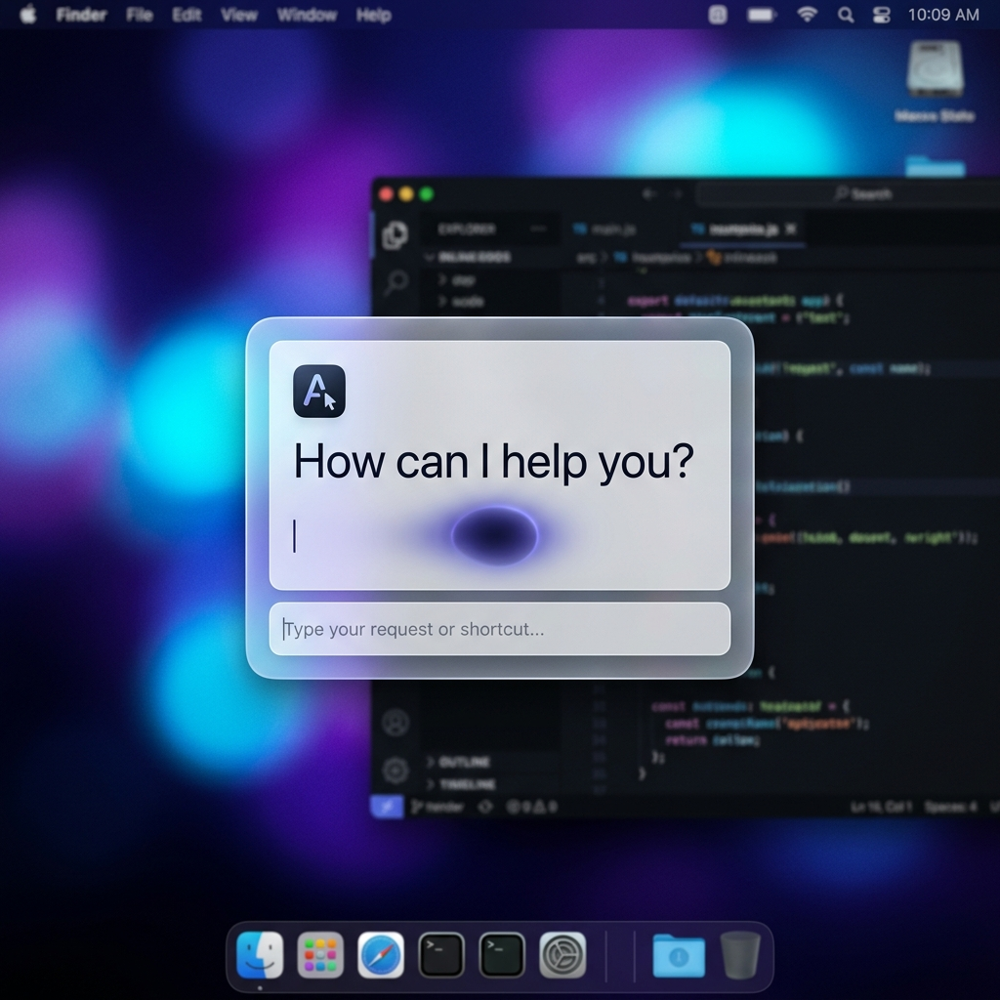
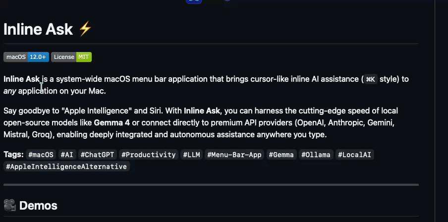
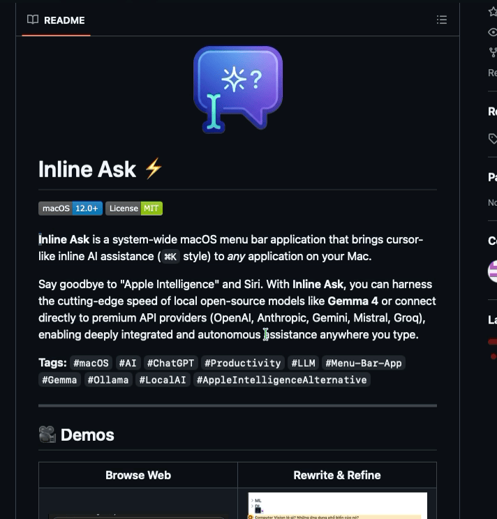
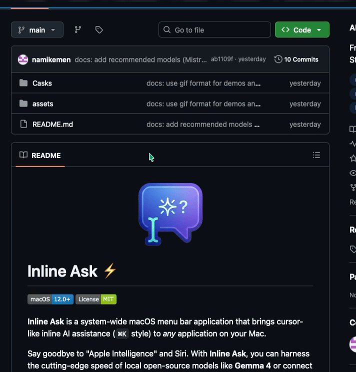
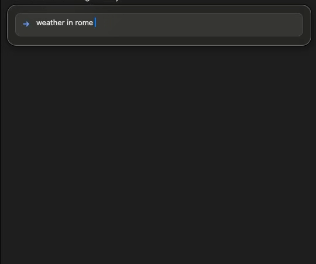
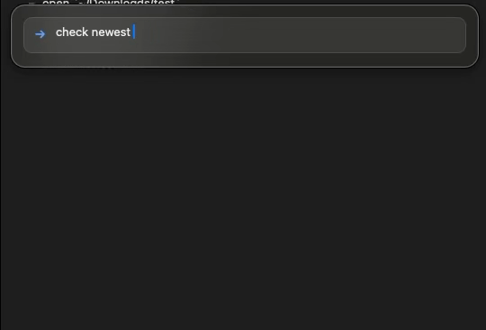
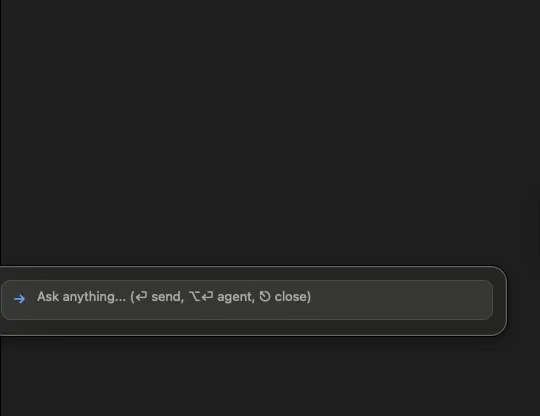

AI Assistant,
Everywhere.
Bring the power of LLMs to every application on your desktop. One shortcut, infinite possibilities.

Instant Access
The magic happens with a single touch.
What you can do
with Inline Ask
From quick edits to complex automation — everything happens right where you type.







Global Shortcut
Summon your assistant in any text area, code editor, or browser with a system-wide hotkey.
Local & Cloud Models
Support for Ollama (local), OpenAI, Anthropic, Gemini, Groq, and more. Your choice of intelligence.
Agent Mode
Go beyond chat. Run shell commands, execute AppleScripts, and search the web autonomously.
Privacy First
Run entirely offline with local models or securely connect to your preferred providers.
Contextual Actions
Quick actions on text selection. Transform, translate, or explain text instantly where you type.
Cross Platform
Built with Tauri and Rust for a lightweight, native experience on both macOS and Windows.
Ready to try it?
Free and open source. Download now and start using AI everywhere you type.
Get Inline Ask